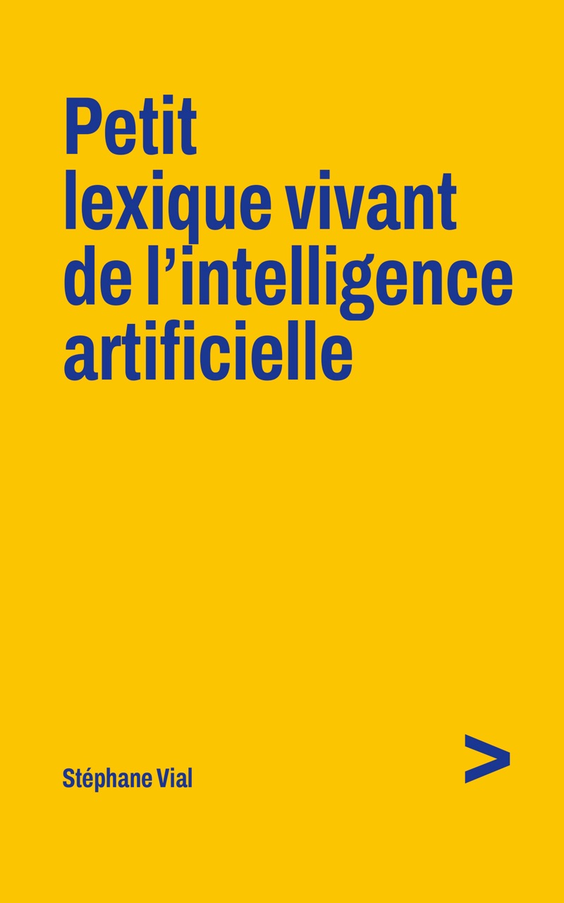

Un professeur de l’UQAM publie un livre sur l’IA, écrit avec l’IA
Communiqué de presse. Texte intégral, et le PDF à télécharger.
Télécharger le communiqué en PDF (30 Ko)
Stéphane Vial, professeur titulaire à l’École de design de l’Université du Québec à Montréal, publie Petit lexique vivant de l’intelligence artificielle : quatre-vingt-onze notions, une page chacune, pour mieux comprendre l’IA et comment elle fonctionne.
Non seulement le livre a été écrit avec l’IA mais il documente le processus. Les quatre dernières pages racontent comment l’auteur s’y est pris, sans jamais céder sur ses exigences intellectuelles, pour écrire avec l’IA : « Je n’ai pas dit qu’elle pourrait le faire mieux que moi. J’ai dit plus vite », écrit-il page 131.
La préface et la relecture critique sont de Marcello Vitali-Rosati, professeur titulaire à l’Université de Montréal. La relecture par les pairs est au fondement de la publication universitaire, et l’écriture avec l’IA ne change strictement rien à cela.
L’ouvrage est autoédité, par choix créatif et exploratoire. Une telle expérience d’écriture, plutôt avant-gardiste, nécessitait une liberté totale. De plus, grâce à l’IA, l’auteur est allé encore plus loin et a tenu seul toute la chaîne, de la couverture au dépôt légal, en acceptant d’en payer le prix : ni librairie, ni distribution, ni équipe éditoriale.
Le livre s’adresse en particulier aux enseignants et aux étudiants de toutes disciplines, qui doivent aujourd’hui parler de l’IA avant d’avoir eu le temps de l’étudier. Il se termine ainsi : « L’intelligence artificielle peut assister l’écriture. Elle ne dispense jamais de penser. »
Stéphane Vial est professeur titulaire à l’École de design de l’UQAM et chercheur régulier au Centre de recherche de l’IUSMM. Docteur en philosophie, il est notamment l’auteur de L’être et l’écran : comment le numérique change la perception.
| Renseignement | Valeur |
|---|---|
| Parution | 6 octobre 2026 |
| Format | Livre broché, 138 pages · Livre numérique (ePub) |
| ISBN | 978-2-9825534-0-8 (imprimé) · 978-2-9825534-1-5 (ePub) |
| Éditeur | Stéphane Vial · Montréal · Dépôt légal BAnQ |
| Diffusion | amazon.ca · amazon.fr · amazon.com |
| Contact presse | vial.stephaneSUPPRIMEZ-CE-FRAGMENT@uqam.ca |
Des exemplaires de presse sont disponibles sur demande, en livre imprimé ou en PDF.
